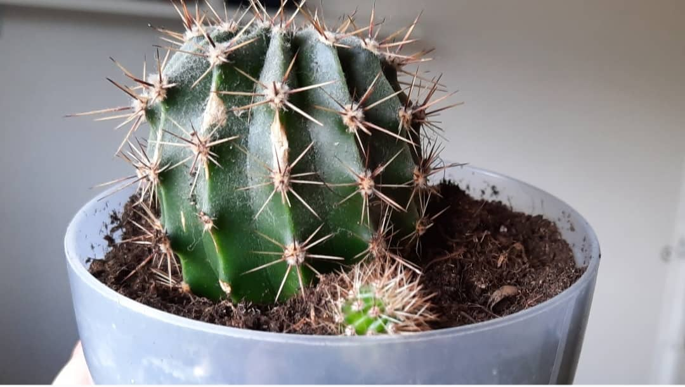

Matcha – ljekovitost, nuspojave i upotreba
Porijeklo matcha praha
Matcha prah se već stoljećima koristi u Kini i Japanu a predstavlja oblik zelenog čaja. Smatra se proizvodom najveće kvalitete i najaromatičnijeg zelenog čaja. Riječ matcha sastoji se od dvije japanske riječi, mat što znači trljati i cha što znači čaj. Proizvodi se od biljke Camellia sinensis (Kineski čajevac). Otkio ju je prije 5000 godina, vladar Shen Nung. Naziv matcha koristi se za finalni samljeveni proizvod dok se sirovi materijal, prije mljevenja, zove Tencha.
Kako nastaje matcha?
Nastaje od samljevenih listova zelenog čaja, pa je zbog toga jači od uobičajenog čaja. Matcha prah možete dodati u
slatka i u slana jela, poput jogurta, kafe, umaka, zobene kaše itd.
Treba imati u vidu da matcha nema dug rok trajanja. Potrebno ga je iskoristiti u roku od dva mjeseca, nakon otvaranja.
Matcha se proizvodi od listova čaja koji su uzgojeni u hladu. Grmovi čaja se štite od sunca, a svjetlosti se do grmlja
filtrira u kontroliranim uvjetima. Nedostatak sunca uzrokuje smanjenje biljne fotosinteze lišća, što mijenja prirodne
razine kofeina, flavanola, šećera, antioksidansa i teanina. Kontrolom izlaganja biljke suncu, može se promijeniti
hemijski sastav i okus listova čaja.
Kada je period branja listova, ručno se beru samo najnoviji ljetnji pupoljci i tri lista biljke uzgojene u hladu. Upravo
zbog ovakvog branja, rok proizvodnje je vrlo ograničen , što predstavlja jedan od razloga zašto je matcha jedan od
najskupljih čajeva.
Nakon branja listovi se polažu ravno, kako bi se osušili i postali tencha. Zatim se tencha oslobađa stabljike i žila,
nakon čega se u kamenim mlinovima dobiva matcha prah.
Matcha – vrste
Matcha se obično dijeli na dvije vrste:
- Ceremonijalna vrsta – koja predstavlja najkvalitetniju vrstu matche. Ceremonijalnoj vrsti se daje najviše pažnje prilikom obrade, s ciljem dobijanja najsvježije i najglatkije mljevene matche. Ova vrsta se pije bez dodatnih zaslađivača ili dodataka.
- Kulinarska vrsta – ova vrsta ima snažniji okus koji se može kombinirati sa drugim sastojcima. Može imati tamniju boju od ceremonijalne vrste, jer u većini slučajeva uključuje mljeveno lišće koje je imalo pričvršćene stabljike i žile. Također, ova vrsta je malo jeftinija od prethodne i može se miješati sa mlijekom za latte ili jača pića za koktele.

Kako napraviti macha čaj i matcha latte?
Da bi napravili matcha čaj, potrebno je da u 120ml vode zagrijane do 60°C dodate 2 kašičice matcha praha i miješate dok
se ne pojavi pjena. Za razliku od zelenog čaja, matcha čaj možete praviti i sa hladnom vodom.
U svoj čaj možete dodati nekoliko kapi javorovog sirupa ili meda, kako bi ublažili gorčinu čaja.
Bitno je napomenuti da prilikom miješanja matcha praha, ne miješate kružnim pokretima nego snažno s jedne na drugu
stranu. Jedino na taj način ćete stvoriti pjenu i prah će se ravnomjerno raspršiti u vodi. Na kraju, u svoj čaj možete
dodati i mlijeka.
Matcha čaj je najbolje miješati kašikom od bambusa. Ukoliko nemate bambusovu kašiku, možete koristiti i običnu
kašiku ili žićanu mješalicu, međutim nećete dobiti puno pjenaste teksture.
Nikako ne trebate matcha prah preliti kipućom vodom, jer će na taj način čaj postati mnogo gorak.
Ukoliko želite da napravite latte od matcha praha, umjesto vode stavite mlijeko, ostali postupak je isti kao i za čaj.
Matcha - okus
Ukoliko poredimo okus sa zelenim čajom, matcha je kremastiji. Ima blago gorak okus i jaku zelenu boju zbog visoke količine hlorofila u lišću. Što je svijetliji matcha čaj, to je i kvalitetniji, prirodnije slađi.
Matcha ili kafa
Oboje, i kafa i matcha imaju gorak okus i veoma malo kalorija. Za razliku od matche, kafa sadrži više kofeina po porciji. Imaju višestruke zdravstvene benefite. Pomažu pri gubljenju kilograma i smanjuju rizik od srčanih bolesti i raka. Također, mogu povećati nivo vaše energije. Razlika je u tome što kafa daje trenutni poticaj energije dok matcha može dati nešto sporiji. Što se tiče cijene, matcha prah je dosta skuplji od kafe pa se iz tog razloga većina odlučuje na konzumiranje kafe.
Matcha - zdravstvene prednosti
U sastavu matcha praha nalazi se mnogo antioksidansa koji štite stanice u vašem tijelu od oštećenja.
Zahvaljujući katehinima i antioksidansima, matcha može pomoći pri snižavanju krvog pritiska, te samim tim i smanjiti
rizik od srčanih bolesti, srčanog i moždanog udara. Poznato je da matcha ima čak 137 puta više katehina od zelenog čaja.
Nekoliko istraživanja pokazuju učinkovitost EGCG-a u prevenciji raka kože, jetre i pluća. Međutim, potrebno je još
dodatnih istraživanja, jer su do sada istraživanja vršena u epruvetama.
Može pomoći i kod snižavanja LDL (lošeg) holesterola, zahvaljujući katehinima koji se nalaze u njegovom sastavu.
Iako je potrebno još istraživanja, smatra se sa matcha može pomoći u zaštiti od raka, zbog polifenola i drugih
antioksidanata koje posjeduje.
Smatra se da matcha može pomoći i pri poboljšavanje zdravlja jetre.
Zbog kofeina koji se nalazi u sastavu matcha praha, može vam pomoći pri razbuđivanju i popravljanju koncentracije.
Međutim, trebate biti oprezni. Velika konzumacija matcha praha može izazvati kontra efekt, odnosno može uzrokovati
nervozu i nemiran san.
Matcha može pomoći i pri gubitku težine na način da pospješuje metabolizam i sagorijeva kalorije.
Istraživanje u American Journal of Clinical Nutrition pokazalo je da konzumacija zelenog matcha čaja može povećati
termogenezu sa 8% - 10% na 35% - 42% dnevne potrošnje. Termogeneza predstavlja vlastitu stopu sagorijevanja kalorija u
tijelu. Potvrđeno je i da matcha može poboljšati fizičku izdržljivost za 24%.
Također, može vam pomoći pri jačanju imunološke odbrane tijela i zaštiti od različitih antigena i antitijela zbog EGCG i
L-teanina.
Matcha čaj se pokazao vrijednim za održavanje zdravog metabolizma kod dijabetičara. Bogat je antioksidansima koji pomažu
u smanjenju razine triglicerida, ukupnog kolesterola i sadržaja glukoze u jetri kod dijabetičara.
Istraživanja su pokazala da redovita konzumacija matcha čaja djeluje inhibitorno na oštećenje bubrega i jetre
sputavajući nakupljanje krajnjih proizvoda uznapredovale glikacije u bubrezima.
Matcha za mršavljenje
Konzumacija matcha praha i zelenog čaja postaje sve popularnija zbog vjerovanja da pomažu pri gubitku viška kilograma. Studije sugerišu na to da matcha može pomoći pri mršavljenju zahvaljujući katehinima koji se nalaze u njenom sastavu. Otkriveno je da katehini imaju prirosnu sklonosti borbi protiv mršavljenja. Pokazalo se i da postoji veza između konzumiranja matche i stope smanjenja masnoća u tijelu. Ipak, potrebno je još istraživanja da bi se da sigurnošću moglo ovo tvrditi.
Matcha protiv anksioznosti
Istraživanja vršena nad miševima pokazala su da matcha može pomoći pri smanjenju anksioznosti. Matcha je aktivirala dopaminske DR receptore i specifične receptore serotonina u mozgu miševa, zbog čega se zaključilo da svakodnevno konzumiranje matcha čaja može biti od pomoći pri ublažavanju anksioznosti i poboljšavanju raspoloženja. Ova svojstva matcha čaja pripisuju se spojevima kao što su EGCG i L-teanin. Studije tvrde da L-teanin može povećati oslobađanje dopamina i poticati koncentraciju serotonima koji smanjuje tjeskobu i stres. Također, pokazalo se da L-teanin stimuliše aktivnost alfa talasa u mozgu u periodu od 30 do 40 minuta nakon konzumiranja. Na taj način, potiče stanje duboke opuštenosti i mentalne budnosti. Uzimajući u obzir da matcha prah sadrži visoku količinu L-teanina objašnjava činjenicu zašto matcha smanjuje anksioznost i stres a ne izaziva pospanost kao nuspojavu.
Matcha protiv gastritisa
Gastritis predstavlja bolest za koju je posljednjih godina veoma teško bilo pronaći rješenje. Međutim, pojavilo se istraživanje koje tvrdi da postoji veza između konzumacije matche i smanjenja gastritisa. Ispijanje zelenog čaja ili matche može pomoći pri usporenju razvoja gastritisa, što zapravo predstavlja rješenja za zaustavljanje nekih vrsta raka želudca.
Matcha za kosu i kožu
List matche je veoma čist i bez toksina. Predstavlja najbolji sastojak za nanošenje na golu kožu. Može se koristiti i kao maska za lice. Matcha pomaže u borbi protiv akni i uklanjanju mrlja sa lica. Zahvaljujući EGCG-u, matcha smanjuje crvenilo koje je povezano s hroničnim kožnim stanjima, dok katehini zarobljavaju i deaktiviraju slobodne radikale u koži što dovodi do usporenja znakova starenja. Matcha potiče i rast kose. Vitamin E, koji se nalazi u njenom sastavu, pomaže u cirkulaciji krvi što je korisno u poticanju zdravog rasta kose. Pomaže pri njegovanju pramenova vaše kose i omogućuje nov izgled. Možete sami napraviti masku za kosu. Dovoljno je samo da matcha prah pomiješate sa kokosovim uljem, shea maslacem ili maslinovim uljem. Smjesu možete držati u staklenoj posudi te koristiti duži period. Napomena: Pazite da u matcha čaj ne dodajete višak šećera jer će to poništiti njegove zdrave benefite.
Matcha - nuspojave
Pored mnogih prednosti, konzumiranje matcha praha može uzrokovati i neke privremene nuspojave.
Ukoliko niste navikli na matchu ili je pijete u velikim količinama i brzo, možete osjetiti nervozu i tjeskobu.
Anemija je jedna od nuspojava koju uzrokuje svakodnevno konzumiranje matche ukoliko imate problema sa apsorpcijom
željeza ili postoji rizik od nedostatka željeza. Do anemije može doći zbog visoke doze kofeina i EGCG, koji se nalaze u
sastavu matche, jer oni ometaju apsorpciju željeza na način da se vežu za proteine koji ga prenose.
Još jedna od nuspojava koju može uzrokovati macha je dehidracija. Naime, zbog kofeina koji je diuretik i povećava brzinu
mokrenja, gubite više tekućine iz vašeg tijela nego inače, što dovodi do dehidratacije. Zbog toga, ako pijete matchu,
potrebno je da povećate i unos vode u vaš organizam.
Konzumacija matcha čaja u poslijepodnevnim ili večernjim satima uzrokuje probleme sa snom. Naime, kofein u našem tijelu
ostaje nekoliko sati, pa ako kasno popijete matcha čaj, možete imati problema sa spavanjem. Nećete moći zaspati na
vrijeme.
Matcha može uzrokovati i tegobe sa želudcom. Zbog vlakana i kofeina koji se nalaze u njenom sastavu, može imati
laksativni učinak na mnoge ljude. Ako pijete velike količine ovog čaja možete pogoršati bilo koju postojeću upalu u
vašem probavnom sistemu, zbog EGCG-a koji uzrokuje upale.
Tanini (biljni polifenoli) mogu uzrokovati nastanak mrlja na zubima. Lijepi se za zubnu caklinu, ako je prisutan u
velikim količinama. Nastanak mrlja možete spriječiti konzumiranjem soka od citrusnog voća, voća koji sadrži limunsku
kiselinu, nakon konzumacije čaja. Trebate imati na umu da ukoliko perete zube odmah nakon ispijanja matche, možete
povećati vjerovatnoću nastanka mrlja na zubima.
U sastavu matche se mogu naći i toksični metali poput olova i žive, ali to su rijetki slučajevi. Zbog ovih metala, ne
preporučuje se konzumiranje matche svaki dan jer izloženost velikim količinama olova može uzrokovati oštećenje mozga,
bubrega, pluća, živčanog sistema i crvenim krvnim stanicama tokom vremena. Živa se vremenom nakuplja u vašem tijelu, a
trovanje živom uzrokuje simptome kao što su drhtanje, gubitak pamćenja i probleme sa vidom.
Matcha može uzrokovati i pojavu akni zbog velike količine kofeina. Posebno u slučaju kada se konzumira na prazan
želudac. Ukoliko pijete matchu na prazan stomak možete uzrokovati kiselost želudca, povraćanje , refluks ili mučninu.
Ovaj čaj bi trebale izbjegavati dojilje i trudnice, kao i svaki drugi napitak koji sadrži kofein.
Količina matche koja je dozvoljena, zavisi od faktora kao što su dob osobe, težina, zdravstveno stanje i količina
izloženosti elementima.
Ukoliko primjetite crvenilo, osip, otekline i svrbež kože, moguće je da ste alergični na matchu pa bi bilo najbolje
prije konzumacije da se posavjetujete sa vašim doktorom.
Sadrži li matcha kofein?
Matcha u svom sastavu sadrži kofein, međutim sadrži i aminokiselinu L-teanin koji djeluje umirujuće i povećava
koncentraciju, pa za razliku of kafe, matcha vas ne čini nervoznim i stimulira povećanje energija.
Sadrži više kofeina od zelenog čaja.
U jednom šoljici zelenog čaja nalazi se od 24 do 40mg kofeina, dok u matchi od 25 do 70 mg. Ipak najviše kofeina se
nalazi u kafi (od 85 do 200mg).
Matcha - nutritivne vrijednosti
Sadrži vitamine A, B, C i E, aminokiseline i antioksidanse poput EGCG-a ( epigalokatehin galata). Antioksidansi su
prirodni hemijski spojevi koji sprječavaju starenje i hronične bolesti.
Stručnjaci sa Sveučilišta Tufts, metodom ORAC (sposobnost apsorpcije kisikovih radikala), otkrili su da matcha sadrži
količinu antioksidansa čak 20 puta veću nego nar ili borovnice.
U 100g matcha čaja u prahu imamo 50g bjelančevina, 5000 IU vitaman A, 18mg željeza i 300kcal(1256kJ) energetske
vrijednosti.
Bogata je vitaminima, vlaknima i hlorofilom. Sadrži vitamin C, selen, krom, cink i magnezij.
Kolač od matcha praha
Za matcha kolač potrebno je da napravite biskvit, glazuru i smjesu za ukrašavanje. Za biskvit su vam potrebni sljedeći sastojci:
- 2 štapića maslaca
- pola šolje šećera
- 3 jaja
- pola šolje brašna
- 2 kašičice praška za pecivo
- 2 kašičice kukuruznog škroba
- 2 kašike matcha praha
- 2 kašike vode
- 300 gr krem sira
- 2/3 šolje šećera
- 2 šoljice hladnog vrhnja za šlag
- prstohvat soli
- 2 kašike šećera u prahu
- 1/2 kašičice matcha praha
Matcha kuglice
Da bi napravili matcha kuglice potrebni su vam sljedeći sastojci:
- 1 kašika matcha praha
- 1 ½ šoljica brašna od badema
- 2 kašike javorovog sirupa
- ½ šoljice maslaca od kikirikija
- ½ šoljice mljevenih pistacija za premazivanje
Sok od matcha praha
Za sok od matcha praha potrebni su vam sljedeći sastojci:
- 1 šaka špinata
- ½ šoljice nasjeckanog peršuna
- 1 kašika soka od limete
- ½ jabuke, nasjeckane
- ½ kašičice matcha praha
- ¼ do ½ šoljice vode
Puding od matcha praha i chia sjemenki
Potrebni su vam sljedeći sastojci:
- 1 šolja bademovog mlijeka
- ½ kašike matcha praha
- 1/3 šoljice chia sjemenki
- 1 kašika ekstrakta od vanilije
- 1 kašika sirupa od riže
Sladoled od matcha praha
Za pripremu matcha sladoleda potrebni su vam sljedeći sastojci:
- 1 kašika matcha zelenog čaja u prahu
- 3 kašike vruće vode
- 2 žumanjka
- 5 kašika bijelog šećera
- ¾ šoljice punomasnog mlijeka
- ¾ šoljice masnog vrhnja, tučenog
Matcha smoothie prije treninga
Potrebni su vam sljedeći sastojci:
- 1 šoljica bademovog mlijeka
- 1 kašika chia sjemenki
- 1 kašičica matcha praha
- 1 smrznuta banana, nasjeckana
- ¼ šoljice badema, potopljenih preko noći
- ¼ šoljice indijskih oraha, potopljenih preko noći
- 1 kašičica ekstrakta vanilije
Matcha Cheesecake Brownies
Recept se sastoji od dva dijela. Baza za matcha brownie i nadjev od krem sira. Za matcha brownie potrebni su vam sljedeći sastojci:
- 1 veliko cijelo jaje
- Ulje avokada (kao zamjena može se koristiti neutralno biljno ulje ili otopljeni neslani maslac)
- Šećer po želji
- Matcha prah (zavisno od okusa i intenziteta koji želite)
- Ekstrakt vanilije
- Prstohvat soli
- Brašno po potrebi
- Krem sir (punomasni oko 150 gr)
- Malo šećera
- 1 žumanjak
Tags

Možda vam se svidi i sljedeće:

